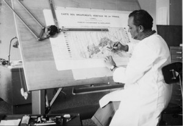

Créé en 1961 sous l’impulsion de Louis EMBERGER, le Centre d’Etudes Phytosociologiques et Ecologiques (CEPE) est une unité de recherche du CNRS. Il devient en 1988 le Centre d’Ecologie Fonctionnelle et Evolutive (CEFE).
A sa création, le but du laboratoire est de comprendre le fonctionnement des associations végétales. Les équipes du CEPE vont travailler pour un inventaire exhaustif des associations végétales. Plus généralement, la cartographie de la végétation constitue un élément d’information de première importance pour la connaissance du milieu naturel et de ses possibilités d’utilisation.
Au niveau national le CNRS a décidé d’entreprendre ce travail à 2 échelles :
Au CEPE, un atelier de dessin va assister les phytosociologues du laboratoire dans l’élaboration de la CGV. Cet atelier participe aussi à des travaux cartographiques initiés par les chercheurs de l’unité sur d’autres thématiques. L’atelier va donc naturellement se transformer en cartothèque. Il va collecter les travaux des chercheurs du CEFE mais aussi s’enrichir au fil du temps de productions d’autres laboratoires et instituts; notamment ceux du Service de la Carte de Végétation de Toulouse. L’atelier de dessin disparaît dans les années 1990 avec l’apparition et le développement des outils informatiques de graphisme et de système d’information géographique.
A ce jour la cartothèque du CEFE compte 5176 documents. Les productions du seul laboratoire CEPE/CEFE y représentent 630 cartes parmi 785 issues de travaux du CNRS en général. 1546 cartes concernent spécifiquement la région Languedoc-Roussillon. Plus de 900 sont des fonds topographiques ou cadastraux relativement anciens. 352 cartes sont labélisées « Carte des Groupements Végétaux » , « CEPE » ou « CEFE » .
La « paternité » des productions présentes dans la cartothèque du CEFE selon 7 catégories :
Il faut remarquer l’ancienneté des œuvres. La grande majorité a plus de 20 ans. Les cartes de végétation (CGV ou SCV) datent pour la plupart des années 1950-60. Sur la forme, on peut distinguer deux types de documents :
La plupart des travaux sont des tracés reportés sur des fonds topographiques ou cadastraux qui sont eux-mêmes des productions issues d’autres organismes (IGN, Service Géographique de l’Armée pour les fonds topographiques, Ministère du Budget pour le cadastre).
Les documents cartographiques sont la plupart du temps des œuvres en elles-mêmes parfois accompagnées de notices explicatives. Pour d’autres, elles sont des illustrations incorporées à des publications existantes (Atlas, articles scientifiques, monographies, thèses, mémoires,…)
Extrait d’un rapport synthétique sur la cartothèque, J.P. Ratte, 2010